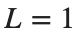

제어공학1 2주차 실습 — 물리 모델과 응답
본인 사본에서 실행하고 관찰을 기록합니다.
이번 실습의 순서는 예측 → 실행 → 관찰 → 물리적으로 설명입니다. 회로/기계 모델의 식은 자습 HTML에서 확인하세요. 작성란의 빈 내용을 자신의 말로 채웁니다.
제출 파일명과 형식은 조교의 과제 안내를 따르세요.
시작 전 · 섹션 실행 방법
코드 안을 클릭하고 Live Editor의 Run Section으로 현재 섹션 전체를 실행하세요.
섹션 실행: Windows/Linux Ctrl+Enter, Mac ⌘+Enter 또는 Run Section 버튼. Run은 문서 전체를 실행합니다.
처음에는 환경 확인 → RLC 기준 실행 → RLC 한 변수씩 변경 → 기계 모델 순서로 진행하세요. 각 단계의 예측란을 먼저 작성하고 Run Section으로 실행한 뒤 결과를 관찰합니다.
parameter·factor를 바꾼 섹션은 다시 실행하세요. 출력은 코드 오른쪽 또는 아래에 표시됩니다. 설명의 빈칸과 표는 직접 작성하세요.
R0·g0 등의 변수가 없으면 RLC 기준 실행 섹션부터 순서대로 실행하세요. 새 세션에서도 위에서부터 실행하고 본인 사본을 저장하세요.
먼저 확인하기
아래 코드는 MATLAB 버전을 표시하고 필요한 함수를 확인합니다. Control System Toolbox가 필요합니다. tf를 찾을 수 없다면 조교에게 환경 확인을 요청하세요.
disp(version);
assert(exist('tf','file') ~= 0, 'Control System Toolbox의 tf 함수를 확인하세요.');
1. 물리 모델 유도
아래 계산을 먼저 수행한 뒤 MATLAB 결과와 비교하세요.
입력  는 외력 [N], 출력
는 외력 [N], 출력  는 질량의 변위 [m]입니다.
는 질량의 변위 [m]입니다.
- 기계 모델의 를 사용하세요.
- 코드 실행 전에 힘의 방향을 표시하고 Newton 법칙으로 Differential Equation을 세우세요.
- Initial Condition을 0으로 놓고 Laplace Transform하여
 를 구한 뒤, 일정한 힘 1 N이 작용할 때의 최종 변위를 계산하세요.
를 구한 뒤, 일정한 힘 1 N이 작용할 때의 최종 변위를 계산하세요. - MATLAB의 Transfer Function과 최종 응답을 자신의 식과 대조하세요.
- 기계 모델 비교 세 경우 중 기준 경우의 예측란에 이 계산을 기록하면 됩니다.
코드 실행 전 — 손으로 계산한 식과 값: ⟦여기에 계산을 적으세요⟧
코드 실행 후 — 비교할 MATLAB 출력값: ⟦출력값을 적으세요⟧
2. 병렬 RLC의 기준 응답
입력은 전류[A], 출력은 전압[V]입니다. Initial Condition이 모두 0인 상태에서 Transfer Function는 분자 s, 분모 C*s^2 + (1/R)*s + 1/L입니다.
실행 전 예상: 전압은 처음과 오래 후에 어떤 값이 될까요? 작성: ______
R0 = 0.5; % ohm
L0 = 1; % H
C0 = 5; % F
t_rlc = linspace(0,25,1001);
g0 = tf([1 0], [C0 1/R0 1/L0]);
disp(g0);
figure('Name','RLC baseline');
step(g0,t_rlc);
grid on;
title('Parallel RLC: 1 A current step');
xlabel('Time (s)'); ylabel('Voltage (V)');
관찰: 예상과 같은 점/다른 점을 적으세요. 작성: ______
계수 배열은 s의 높은 차수부터 적습니다. 분자 [1 0]의 마지막 0을 생략하면 다른 모델이 됩니다.
R, L, C를 한 가지씩 바꾸기
기준값은 Ω,

H, F입니다. 입력은 전류 [A], 출력은 전압 [V]입니다.- 기준 모델의 Unit Step을 실행한 뒤, parameter를 "R", "L", "C"로 하나씩 지정하세요. 각 Parameter에서 factor=2와 factor=0.5로 해당 Section을 각각 다시 실행하세요. 선택하지 않은 두 Parameter는 기준값을 유지합니다.
- 각 실행의 기준·변경 곡선에서 Peak 전압, 진동 유무와 수렴하는 양상을 대조하세요. 바꾼 Parameter·변경 전후 값·관찰한 차이를 관찰표의 해당 행에 기록하세요.
- Parameter별로 관찰한 변화 한 가지를 회로의 저항·인덕턴스·커패시턴스 역할과 연결해 설명하세요. 그림에는 조건을 구분하는 범례와 시간·전압 단위를 표시하세요.
parameter = "R"; % 학생이 바꿀 부분: "R", "L", "C"
factor = 1; % 학생이 바꿀 부분: 2 또는 0.5
assert(any(parameter == ["R","L","C"]), 'parameter는 R, L, C 중 하나여야 합니다.');
assert(isscalar(factor) && isfinite(factor) && factor > 0, 'factor는 양수여야 합니다.');
R = R0; L = L0; C = C0;
switch parameter
case "R"
R = R0*factor;
case "L"
L = L0*factor;
case "C"
C = C0*factor;
end
g_changed = tf([1 0], [C 1/R 1/L]);
figure('Name','RLC comparison');
step(g0,g_changed,t_rlc);
grid on;
legend('Baseline',char(parameter + " x " + string(factor)), 'Location','best');
title('Change one parameter');
xlabel('Time (s)'); ylabel('Voltage (V)');
아래는 관찰을 정리할 표입니다. 각 행에 해당하는 실험을 수행한 뒤 채우세요. 그래프를 저장한다면 어떤 파라미터 값인지 표시하세요.
해석 힌트: 무엇이 변하고 무엇이 유지되는지 나누어 보세요. 저항의 영향은 오늘의 병렬 회로에서 생각해야 합니다.
3. 질량–스프링–댐퍼의 기준 응답
입력은 힘[N], 출력은 평형점 기준 변위[m]입니다. 식은 My'' + by' + k*y = u입니다. 분자는 1, 분모 계수는 [M b k]입니다.
실행 전 예상: 일정한 힘을 계속 가하면 변위가 계속 커질까요? 작성: ______
M = 1; b = 2; k = 5;
t_msd = linspace(0,15,1001);
g_msd = tf(1,[M b k]);
figure('Name','Mechanical baseline');
step(g_msd,t_msd);
grid on;
title('Mass-spring-damper: 1 N force step');
xlabel('Time (s)'); ylabel('Displacement (m)');
관찰과 이유: 작성: ______
세 경우를 한 그래프에서 비교하기
각 조건의 행 순서는 입니다.
조건 | M | b | k |
기본 | 1 | 2 | 5 |
댐핑 증가 | 1 | 8 | 5 |
스프링 상수 증가 | 1 | 2 | 10 |
- cases의 첫 행은 유지하고, 둘째 행을 [1 8 5], 셋째 행을 [1 2 10]으로 바꾸세요. 같은 1 N Step 입력과 시간축으로 세 응답을 실행하세요.
- 세 곡선을 한 Figure에 놓고 조건별 범례와 시간·변위 단위를 표시하세요. 기준 곡선에 비해 Peak 변위, 진동 유무, 수렴하는 양상과 최종 변위가 어떻게 달라졌는지 관찰표에 적으세요.
- 댐핑 증가 조건은 b의 역할과, 스프링 증가 조건은 k의 역할과 연결해 설명하세요. 최종 변위의 차이는 Steady State의 힘 관계를 사용해 설명하세요.
cases = [1 2 5;
1 2 5; % 학생이 바꿀 부분: 댐핑 증가 조건
1 2 5]; % 학생이 바꿀 부분: 스프링 증가 조건
assert(isequal(size(cases),[3 3]) && all(cases(:)>0), 'cases는 양수의 3x3 배열이어야 합니다.');
figure('Name','Mechanical comparison');
hold on;
for idx = 1:3
g_case = tf(1,cases(idx,:));
[y_case,time_case] = step(g_case,t_msd);
plot(time_case,y_case,'LineWidth',1.5);
end
hold off;
grid on;
legend('Case 1','Case 2','Case 3','Location','best');
title('Compare the three cases');
xlabel('Time (s)'); ylabel('Displacement (m)');
설명: 댐핑을 키우는 것과 빨리 안정되는 것은 같은 뜻일까요? 스프링을 키웠을 때 최종값도 같은가요? 그래프와 모델식에 근거해 적으세요. 작성: ______
저장·제출 전 확인
- RLC에서 각 파라미터 변경 결과와 물리적 의미를 기록했는가?
- 기계 모델의 비교 조건이 (M,b,k)=(1,2,5), (1,8,5), (1,2,10)인가?
- 세 경우가 한 그래프에 표시되고 Legend(범례)·단위를 읽을 수 있는가?
- 미작성/빈칸을 채우고 결과를 자신의 말로 설명했는가?
- 본인 작업이 저장되어 있고 제출 방식은 조교 안내와 일치하는가?
KLAS 2주차 과제 마감: 2026-09-10 23:59. 변경되면 최신 공지를 따르세요.
제출 마감2026-09-10 23:59 (한국 시간)제출 파일명·형식조교의 제출 안내를 따르세요.제출 장소KLAS의 해당 과제. 변경 공지가 있으면 최신 공지를 따릅니다.